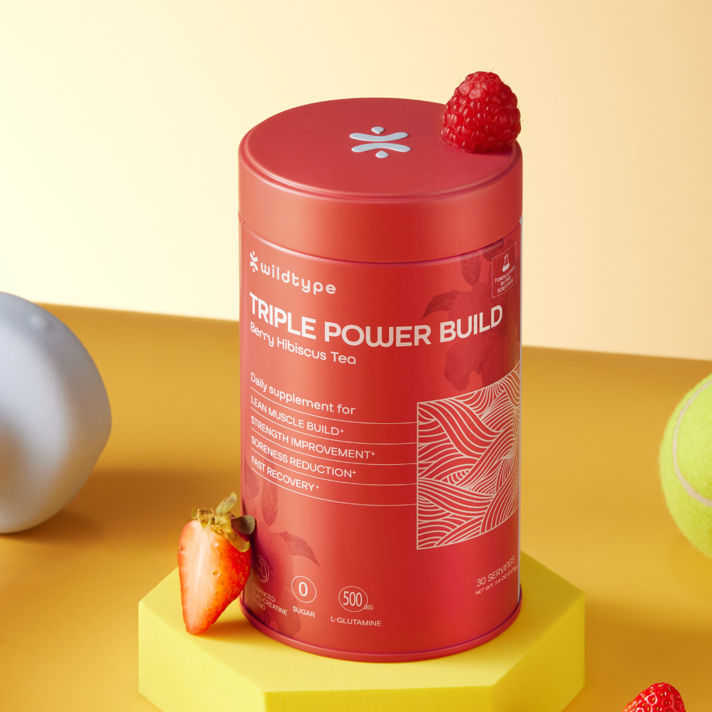
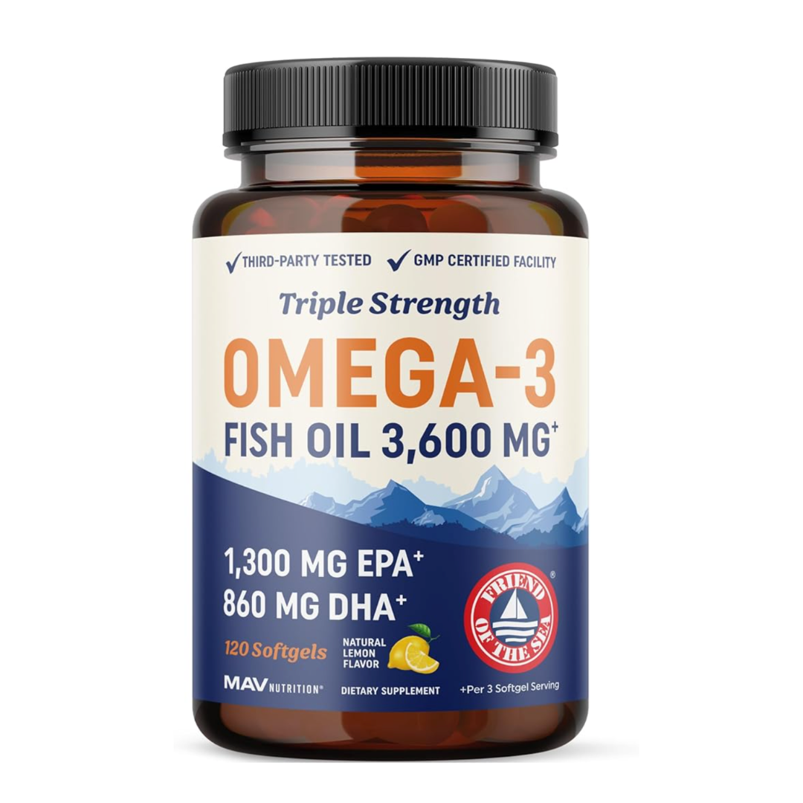
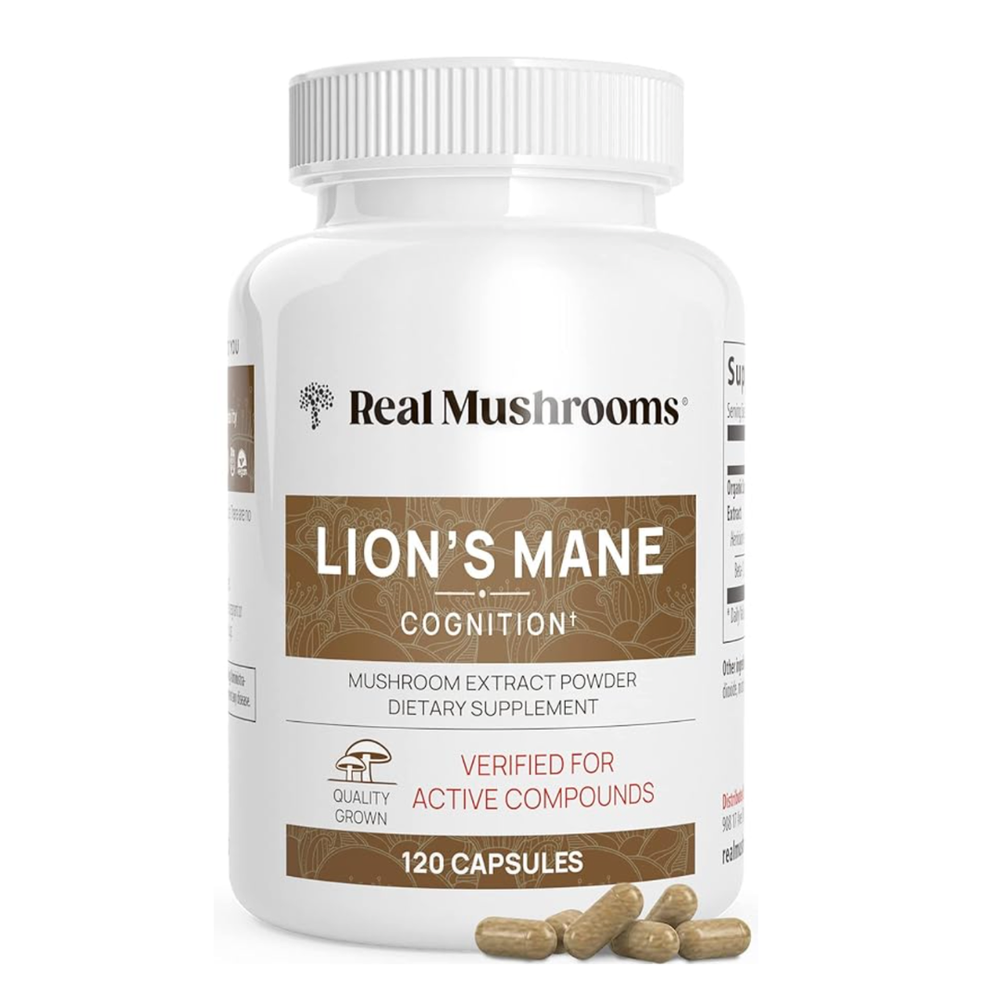
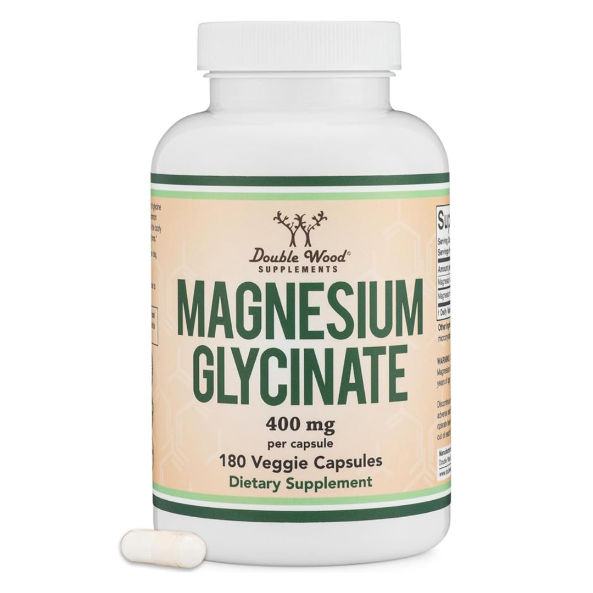
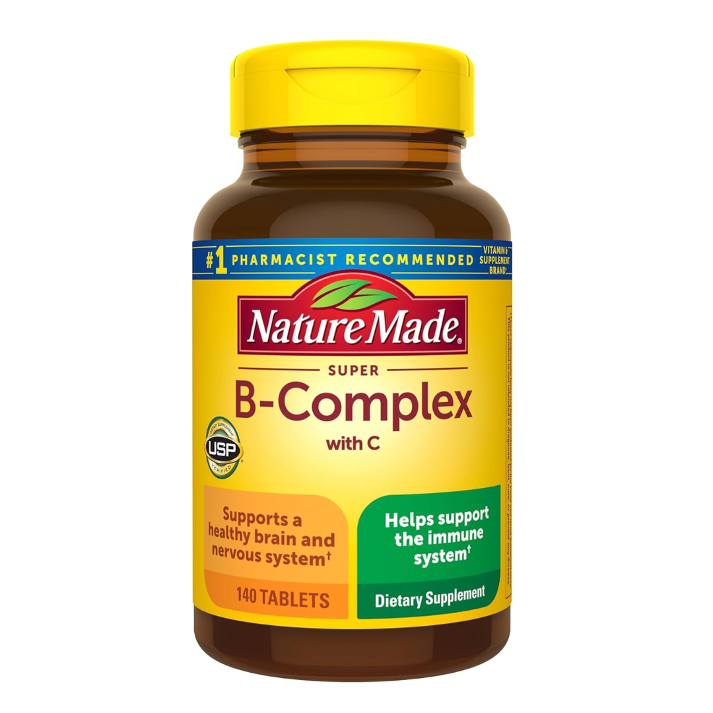

I used to be sharp. I could hold three things in my head at once, write clearly, work through problems without stalling. Then, somewhere in the middle of an otherwise normal year, that stopped. I'd walk into a room and forget why. I'd reread the same sentence four times. Conversations felt like I was responding through fog.
I wasn't sleeping badly. I wasn't skipping the gym. But something was clearly off. So I decided to actually test it — systematically, one solution at a time, over six months. Here's what I found.
My Testing Approach
Duration: 12 months · Method: One solution added at a time, minimum 4 weeks per trial · Criteria: Mental clarity, focus, memory, morning sharpness, and sustained energy. I kept a daily journal and rated each day on a 10-point scale before and after each change.
My Rankings: 5 Solutions That Actually Made a Difference

Wildtype Triple Power Build
This was the most surprising finding of the entire six months. I started taking Triple Power Build primarily for gym performance — I wanted to rebuild some strength I'd been losing. What I didn't expect was how much sharper I'd feel mentally within a few weeks.
The connection makes sense in hindsight. When your body is under-recovered — when muscles aren't rebuilding properly and your system is running on a deficit — cognitive performance suffers too. Triple Power Build targets the three pillars behind that: muscle rebuilding, recovery, and strength output. Once my body started actually recovering from workouts instead of just accumulating fatigue, the fog started lifting.
By week five, I was writing faster, thinking more clearly, and waking up without that heavy, sluggish feeling I'd gotten used to. It was the single biggest shift of the entire six months.
✓ Pros
- Noticeable mental clarity improvement
- Supports full-body recovery
- Targets muscle rebuilding and strength output
- No jitters or crash
- Easy to add to a morning or post-workout routine
✗ Cons
- Takes 3–4 weeks to feel full effect
- Premium price point

Omega-3 / Fish Oil (High-DHA)
DHA — the omega-3 fatty acid found in fish oil — makes up about 40% of the polyunsaturated fats in the brain. If you're deficient in it (and most people are), your cognitive performance suffers. I switched to a high-DHA fish oil at a dose of 2g EPA+DHA per day and noticed a genuine improvement in sustained focus over 4–6 weeks.
The effect isn't immediate or dramatic — it's more like a slow brightening. I found it easier to stay on one task for longer without my mind wandering. Morning grogginess also noticeably reduced.
✓ Pros
- Directly supports brain structure (DHA)
- Anti-inflammatory effects benefit the whole body
- Affordable and widely available
- Well-researched, decades of evidence
✗ Cons
- Fishy aftertaste with some brands
- Takes 4–6 weeks for full effect
- Quality varies significantly by brand

Lion's Mane Mushroom
Lion's Mane is one of the few supplements with genuine research behind it for cognitive support. It works by stimulating Nerve Growth Factor (NGF), a protein involved in the maintenance and growth of neurons. It's slow — I didn't feel anything for the first three weeks — but by week six, my focus and ability to sit with difficult thinking tasks had meaningfully improved.
I used a dual-extract form (hot water + alcohol extract) to ensure I was getting both the water-soluble beta-glucans and the alcohol-soluble hericenones. Cheap single-extract capsules are unlikely to do much.
✓ Pros
- Supports NGF and neuroplasticity
- Zero side effects
- Builds over time — effects deepen with consistent use
- Also supports gut-brain connection
✗ Cons
- Slow onset — 4–6 weeks minimum
- Quality varies wildly between brands
- Not a quick fix for acute brain fog

Magnesium Glycinate
Most adults are deficient in magnesium without knowing it — and magnesium deficiency is directly linked to brain fog, fatigue, and poor sleep. The glycinate form absorbs far better than the cheap oxide form you'll find in most multivitamins. For me, the biggest improvement was in sleep depth, which had a downstream effect on morning clarity.
On its own, magnesium glycinate ranked fourth — but combined with the omega-3s and Triple Power Build, the effect was noticeably amplified. It's a strong foundation supplement even if it isn't the most dramatic standalone.
✓ Pros
- Addresses a common, underdiagnosed deficiency
- Improves sleep depth and quality
- Supports nervous system and stress response
- Very affordable
✗ Cons
- Modest standalone cognitive effect
- Must use glycinate form — not oxide
- 1–2 weeks to feel full effect

B-Complex Vitamins
B vitamins — especially B12 and folate — are essential for brain function and energy metabolism. If you're deficient in B12 specifically (common in people who eat little red meat or who are stressed), the brain fog can be significant. I added a methylated B-complex (methylcobalamin, not cyanocobalamin) and noticed a mild but real improvement in sustained energy and afternoon mental stamina.
It ranked fifth because the effect, for me, was more subtle than the others — but it's such a safe, cheap baseline supplement that there's very little reason not to take it.
✓ Pros
- Addresses B12/folate deficiency (very common)
- Supports energy metabolism
- Very affordable
- Safe for daily long-term use
✗ Cons
- Subtle effect if not deficient
- Must use methylated forms for best absorption
- Bright yellow urine (harmless but startling)
Buying Guide: How to Pick What's Right for You
1. Start with recovery, not just cognition
Most brain fog advice focuses on nootropics and cognitive supplements. But if your body isn't recovering properly — from workouts, from stress, from poor sleep — no amount of Lion's Mane will fully compensate. Triple Power Build ranked first precisely because it fixed the underlying recovery deficit that was dragging everything down.
2. Check your forms, not just your ingredients
Magnesium oxide absorbs at about 4%. Magnesium glycinate absorbs at 80%+. B12 as cyanocobalamin is poorly used by many people; methylcobalamin absorbs directly. The specific form matters enormously. Cheap supplements often use cheap forms.
3. Give things time
None of these worked in a week. The average time to noticeable effect: Triple Power Build (3–5 weeks), Omega-3 (4–6 weeks), Lion's Mane (5–6 weeks), Magnesium (1–2 weeks), B-Complex (1–3 weeks). Test one thing at a time and journal your results.
4. Stack strategically
The combination that made the biggest difference: Triple Power Build + high-DHA Omega-3 + Magnesium Glycinate. This covers recovery, brain structure, and nervous system support simultaneously. Everything else is additive from that base.
Red Flags: What to Avoid
- Proprietary blends — if doses are hidden, you can't know if you're getting an effective amount of anything.
- Cheap mineral forms — magnesium oxide, cyanocobalamin B12, and ferrous sulfate iron are poorly absorbed. Always check the specific form.
- "Instant clarity" or "same-day focus" claims — no supplement works like this for brain fog. Anything making these claims is either misleading or relies on stimulants.
- High-caffeine nootropics — they mask fatigue rather than address its cause. You feel better temporarily and worse overall.
Final Thoughts
Six months of testing taught me one thing clearly: brain fog is a symptom, not the problem. For me it was chronic under-recovery — my body was accumulating a deficit that eventually showed up in my thinking. Once I fixed recovery first, everything else worked better.
If I had to recommend one starting point, it's Triple Power Build. Add high-DHA omega-3s and magnesium glycinate as your foundation, and go from there.
The fog lifted. It took a few months, but it lifted.
Disclosure: This article reflects one person's six-month self-testing experience and is not a clinical study. Rankings are based on personal results and journal notes. Results will vary.
Medical Disclaimer: This content is for informational purposes only and does not constitute medical advice. Consult a healthcare professional before starting any supplement regimen.